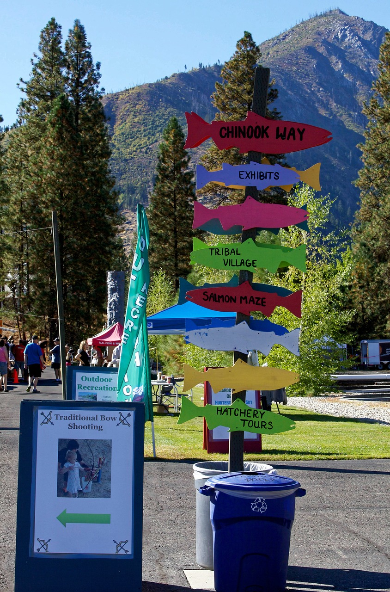

My favorite city is Wenatchee, Washington.It's located in the heart of Washington State, surrounded by mountains, rivers, and orchards. Wenatche is known as the Apple Capital of the world and has a populaton of about 35,000 people. I love this city because it feels peaceful yet full of life, offering sunny weather most of the year and beautiful outdoor adventure you look.
Outdoor Recreation
Wenatchee is surrounded by natrual beauty and countless outdoor activities. Whether yu love hiking, biking, or simply enjoying a riverside picnic, there's always something to explore
- Apple capital Loop trail: Wenatchee's famous Loop Trail is a scenic paved path that circles the columbia River, crossing two historic bridges and connectiong riverside parks with spurs tHydro Park and Lincoln rock State Park.Learn more
- Ohme Gardens: A unique hillside garden with stone pathways, waterfalls, and beatuiful views of the Wenatche Valley. Visit site
- Saddle Rock Trail: A popular local hike offering breathtaking views of Wenatchee and the surrounding mountains.Visit site
Apple Orchards
Wennatchee, the apple capital of the world, is surrounded by vast orchards that thrive in the valley's rich soil and sunny climate. Visitors can enjoy fresh apple picking in the fall, taste local cider, and explro farm stands offering homemade apple treats, all while taking in the beatiful mountain scenery.
Wennatche River Salmon Festival
The Salmon Festival in Wenatche is a popular annual even tht celebratew the return of salmon to the region's rivers. Held each fal at the Rocky Reach Dam , the festival bring together nature, culture, and outdoor fun for whole family. Visitor can enjoy interactive exhibits, educational diplays about salmon conservation, tribial storytelling and dancing, arts and crafts, and hatchery tours. Surrounded by Wenatchee's beautiful mountain scenery, the festival is a great way to learn about the area's wildlife and Native american herritage while enjoying a livey communiy atmosphere.
Wenatchee Walla Walla Park
Walla Walla Point Park is one of Wenatchee's most popular riverfront parks, perfect for reaxing or enjoying outdoor activities. Located along the Columbia River and connected to the Apple Capital Loop Trail, the park features open grassy areas, picnic sports, playgrounds, and schenic views of the water and surrounding hills.It's a favorit3e sport for walking, biking, and spending time with family while taking in Wenatcheee's natural beauty.